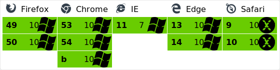

class: cover <div style="width: 40%; margin: -5em auto 0;"> <svg version="1.0" xmlns="http://www.w3.org/2000/svg" viewBox="0 0 320 320" preserveAspectRatio="xMidYMid meet" class="inferno-logo"> <g fill="#494949" stroke="none"> <path fill="#e41f1c" d="m 144.94311,258.52282 c -43.42991,-6.10924 -78.349545,-46.3246 -79.249278,-90.01278 -0.713742,-25.25791 8.34156,-51.65879 26.975037,-69.117297 -1.960341,9.972007 -8.403614,22.362757 -6.547263,34.116337 0.03189,14.37259 13.724222,28.46068 28.515044,24.55802 13.25199,-3.19992 18.25555,-18.79679 14.69862,-30.82848 -3.59996,-16.2619 -12.08863,-31.824491 -9.6427,-48.996236 2.36408,-32.356368 26.89643,-58.022237 53.89035,-73.2676739 5.45365,-4.00072606 3.5945,-0.7332729 1.05839,3.2070159 -9.19456,14.874592 -10.49072,34.010739 -2.56271,49.707822 11.50286,27.012559 33.99187,50.392632 35.28169,81.000292 0.2767,6.28473 -1.87795,22.40825 7.34955,11.98701 14.55425,-13.60356 13.45286,-36.23545 6.86038,-53.472975 -1.78943,-9.7282 9.90839,6.576315 12.79534,9.418665 25.34364,31.70617 26.69333,79.92192 2.68761,112.76308 -20.08741,29.17246 -57.19779,44.88699 -92.11006,38.9372 z"></path> <path d="M 139.30154,315.44353 C 82.363113,307.67683 34.800143,268.05107 16.436043,213.08158 10.714754,195.95597 9.0805235,185.45803 9.0241835,165.4693 c -0.0352,-12.50176 0.44465,-19.64603 1.8136395,-27 11.04078,-59.309408 54.57033,-106.002753 112.446807,-120.619643 6.27275,-1.584203 12.032,-2.88037 12.79832,-2.88037 2.47413,0 1.49878,2.104191 -3.5215,7.597175 -10.71212,11.720769 -19.3445,27.745026 -22.76755,42.263309 l -1.73541,7.360484 -7.04111,4.780717 C 77.348473,93.041494 61.321623,117.28406 56.003853,145.05941 c -1.88244,9.83218 -2.13576,29.04136 -0.50182,38.05201 7.949831,43.84066 41.671205,78.08395 84.985117,86.30046 16.7819,3.18347 38.60099,1.52687 54.33871,-4.12563 31.78525,-11.41628 56.01144,-36.34418 65.95088,-67.86113 3.71227,-11.77127 4.81236,-19.17255 4.79634,-32.26952 -0.03,-24.54617 -6.95521,-45.18905 -21.75828,-64.85773 -12.86464,-17.093099 -28.5736,-27.906277 -54.48766,-37.506276 -3.27639,-1.213757 -7.30792,-9.70224 -9.42083,-19.83582 -1.62317,-7.784779 -0.9459,-15.17185 2.08454,-22.736486 1.49743,-3.73791 2.08109,-4.249696 4.844,-4.247478 4.85895,0.0039 20.82223,4.585093 31.49825,9.03947 45.63792,19.041595 79.31236,59.862697 89.88242,108.95802 3.25529,15.11998 3.71279,43.13125 0.9473,58 -14.91697,80.20173 -89.52188,134.43295 -169.86128,123.47423 z" style="fill: rgb(73, 73, 73);"></path> </g> </svg> </div> .cover-content[ # Introduce InfernoJS ] --- # What is InfernoJS? ### Inferno is an insanely fast, 9kb React-like library for building high-performance user interfaces on both the client and server. -- <br /> <div> </div> ### Dominic Gannaway Currently an engineer working on React at @Facebook. Enjoys coding + being a Dad. --- # Why is InfernoJS created? ### Inferno started as an idea two years ago, to see if a UI library could really improve the experience, battery, memory usage and performance on mobile devices. --- # Core Features .trigger-time.trigger-time--2em[ - Tiny Size - Insane Performance - React Compatible ] --- # Tiny Size .trigger-time.trigger-time--2em[ - Inferno: 9kb - React: 45kb - Preact: 3kb ] --- ## Modern Browsers <br /> <div>  </div> ### In order to support IE8-11, Inferno may require polyfills for Promise/Map/WeakMap/Object.keys. --- ## Modularity .code-block.code-block--small[ ```bash packages/ ├── inferno # core ├── inferno-compat # react bridge ├── inferno-component # customized component ├── inferno-create-class # create class helper ├── inferno-create-element # create element helper ├── inferno-hyperscript ├── inferno-server ├── inferno-shared ├── inferno-test-utils └── inferno-vnode-flags ``` ] --- ## Simplicity ### Less layers and abstractions than React. --- ## Example - Event System .code-block.code-block--smallest.left-section[ ```bash # React Event System src/renderers/dom/shared/syntheticEvents/ ├── SyntheticAnimationEvent.js ├── SyntheticClipboardEvent.js ├── SyntheticCompositionEvent.js ├── SyntheticDragEvent.js ├── SyntheticFocusEvent.js ├── SyntheticInputEvent.js ├── SyntheticKeyboardEvent.js ├── SyntheticMouseEvent.js ├── SyntheticTouchEvent.js ├── SyntheticTransitionEvent.js ├── SyntheticUIEvent.js └── SyntheticWheelEvent.js src/renderers/shared/shared/event/ ├── EventConstants.js ├── EventPluginHub.js ├── EventPluginRegistry.js ├── EventPluginUtils.js ├── EventPropagators.js ├── PluginModuleType.js ├── ReactControlledComponent.js ├── ReactEventEmitterMixin.js ├── ReactGenericBatching.js ├── ReactSyntheticEventType.js ├── SyntheticEvent.js └── eventPlugins ├── ResponderEventPlugin.js ├── ResponderSyntheticEvent.js ├── ResponderTouchHistoryStore.js └── TouchHistoryMath.js ``` ] .code-block.code-block--small.left-section[ ```bash # Inferno Event System packages/inferno/src/DOM/events/ ├── delegation.ts └── linkEvent.ts ``` ] --- # Insane Performance ### One of the fastest front-end frameworks for rendering UI in the DOM <a href="http://stefankrause.net/js-frameworks-benchmark4/webdriver-ts/table.html">JS Web Frameworks Benchmark - Round 4</a> --- ## Delegate Event .code-block.code-block--smaller[ ```javascript function attachEventToDocument(name, delegatedRoots) { const docEvent = (event: Event) => { const eventData = { stopPropagation: false, dom: document }; Object.defineProperty(event, 'currentTarget', { configurable: true, // some browsers recycle the same Event between calls get() { return eventData.dom; } }); event.stopPropagation = () => { eventData.stopPropagation = true; }; const count = delegatedRoots.count; if (count > 0) { dispatchEvent(event, event.target, delegatedRoots.items, count, eventData); } }; document.addEventListener(normalizeEventName(name), docEvent); return docEvent; } ``` ] --- ## Recycle Element/Component .code-block.code-block--smaller[ ```javascript export function mountElement(vNode: VNode, parentDom: Element, lifecycle: LifecycleClass, context: Object, isSVG: boolean) { if (options.recyclingEnabled) { const dom = recycleElement(vNode, lifecycle, context, isSVG); if (!isNull(dom)) { if (!isNull(parentDom)) { appendChild(parentDom, dom); } return dom; } } const dom = documentCreateElement(vNode.type, isSVG); // do other stuff } ``` ] --- ## Avoid Touching the DOM .trigger-time.trigger-time--2em[ - prefer `firstChild`/`lastChild` over `childNodes` - call `textContent = ''` to empty DOM's content - highly efficient [keyed children sorting algorithm](https://github.com/ivijs/ivi/blob/master/src/vdom/implementation.ts#L1417) ] --- # React Compatible .code-block.code-block--small[ ```javascript // webpack/webpack.config.js if (NODE_ENV === 'production') { Object.assign(config.resolve.alias, { 'react': 'inferno-compat', 'react-dom/server': 'inferno-server', 'react-dom': 'inferno-compat', 'react-addons-css-transition-group': 'standalone-react-css-transition-group', 'inferno-component': 'inferno-component2', }); } ``` ] --- # Other Suger Features --- ## Lifecycle on Functional Component .code-block.code-block--small[ ```jsx function mounted(domNode) { // [domNode] will be available for DOM nodes and components } function FunctionalComponent(props) { return <div>Hello world</div>; } Inferno.render( <FunctionalComponent onComponentDidMount={mounted} />, document.getElementById('app') ); ``` ] --- ## LinkEvent ### A helper function that allows attachment of props/state/context or other data to events .code-block.code-block--small[ ```jsx import Inferno, { linkEvent } from 'inferno'; import Component from 'inferno-component'; function handleClick(instance, event) { instance.setState({ data: event.target.value }); } class MyComponent extends Component { render () { return ( <div> <input type="text" onClick={ linkEvent(this, handleClick) } /> <div> ); } } ``` ] --- # Why We Choose InfernoJS? .trigger-time.trigger-time--2em[ - smaller heap size, no crash on sony devices - react compatible - more popular and stable than Preact ] --- ## Risk ### Not 100% compatible with React ### [Please confirm on staging before production]() --- # References .trigger-time.trigger-time--2em[ - [infernojs.org](https://www.infernojs.org/) - [Interview with Dominic Gannaway](https://survivejs.com/blog/inferno-interview/) ] --- # One More Thing ### Inferno source code is very worth and easy to read. --- name: last-page # Thanks